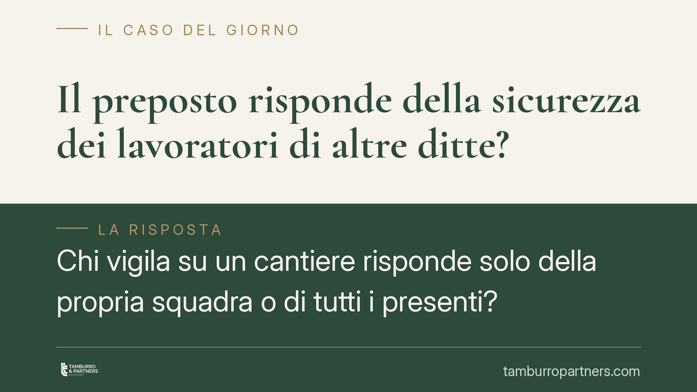

Il preposto risponde della sicurezza dei lavoratori di altre ditte?
Chi vigila su un cantiere risponde solo della propria squadra o di tutti i presenti? Secondo una recente pronuncia della Cassazione penale, il dovere di controllo e segnalazione del preposto si estende a chiunque operi nell'area, anche ai dipendenti di imprese diverse. Una lettura che amplia il perimetro della responsabilità penale e impone attenzione a nomine e procedure.

Il fatto
In un cantiere operavano più imprese. Un lavoratore subiva un infortunio a causa di un pericolo occulto, ossia una fonte di rischio non immediatamente visibile. Il preposto veniva chiamato a rispondere penalmente, pur trattandosi di un addetto non appartenente alla sua impresa.
La difesa sosteneva che il dovere di vigilanza del preposto riguardasse solo i lavoratori della ditta per cui operava. La Cassazione ha respinto la tesi, confermando la condanna: il preposto è garante dell'area affidata, non soltanto della propria squadra.
> Nota redazionale. Gli estremi della pronuncia (sezione, data di deposito, numero) sono in corso di verifica. Si invita a riscontrare la fonte prima di ogni utilizzo in sede difensiva.
Inquadramento normativo
Gli obblighi del preposto sono elencati dall'art. 19 del D.lgs. 81/2008 (Testo Unico in materia di salute e sicurezza sul lavoro). La lettera a) impone di *sovrintendere e vigilare* sull'osservanza degli obblighi di legge da parte dei lavoratori; la lettera f) impone di *segnalare* tempestivamente al datore di lavoro o al dirigente le deficienze dei mezzi, delle attrezzature e ogni altra condizione di pericolo rilevata.
Il punto decisivo è che la norma fa riferimento ai "lavoratori" e alle "condizioni di pericolo" nell'area di competenza, senza circoscrivere il dovere ai soli dipendenti dell'impresa di appartenenza. La lettura estensiva adottata dalla giurisprudenza si fonda sulla posizione di garanzia: chi riveste la qualifica di preposto assume un obbligo di controllo sulla fonte di rischio, e il mancato impedimento dell'evento equivale a cagionarlo (art. 40, comma 2, c.p.).
Quando più imprese operano nello stesso luogo, entrano in gioco anche le regole sul coordinamento. Negli appalti, l'art. 26 del D.lgs. 81/2008 impone cooperazione, coordinamento e, dove dovuto, la redazione del DUVRI (Documento Unico di Valutazione dei Rischi da Interferenze). Nei cantieri temporanei o mobili, il Titolo IV (artt. 89 e seguenti) disciplina la gestione dei rischi tra imprese e assegna un ruolo centrale al Coordinatore per l'esecuzione (CSE) e al Coordinatore per la progettazione (CSP).
Implicazioni pratiche
La conseguenza per chi svolge funzioni di preposto è diretta: la responsabilità penale può sorgere a prescindere dall'identità della vittima. Non rileva che il lavoratore infortunato appartenga ad altra ditta, se il pericolo insisteva nell'area di competenza e il preposto avrebbe potuto rilevarlo e segnalarlo.
La qualifica di preposto, inoltre, si valuta in concreto. Chi di fatto sovrintende all'attività può essere ritenuto preposto anche in assenza di nomina formale (principio di effettività). Questo amplia il novero dei soggetti potenzialmente esposti.
Per le imprese committenti e appaltatrici significa che il coordinamento tra ditte non è un adempimento burocratico: verbali di cooperazione, riunioni e DUVRI concorrono a definire chi doveva vigilare su cosa, e assumono rilievo probatorio in sede penale.
Cosa fare in concreto
- Verificate le nomine. Accertate che i preposti siano individuati formalmente, con indicazione chiara dell'area e delle attività su cui sovrintendono.
- Tracciate le segnalazioni. Documentate per iscritto ogni rilievo di pericolo trasmesso al datore o al dirigente, con data e destinatario (art. 19, lett. f).
- Rendete effettivo il coordinamento. Assicurate che DUVRI (art. 26) e documenti del Titolo IV siano aggiornati e che le riunioni di cooperazione tra imprese producano verbali reali.
- Formate i preposti. Verificate l'avvenuta formazione specifica prevista dalla normativa, con particolare attenzione ai cantieri multi-impresa.
- Conservate la documentazione. È opportuno mantenere ordinati nomine, attestati di formazione, verbali e segnalazioni: in caso di infortunio costituiscono elementi utili alla ricostruzione delle responsabilità.
Il punto
Il preposto è garante dell'area, non della sola squadra. In un cantiere con più imprese, il dovere di vigilanza e segnalazione copre tutti i lavoratori presenti. Formalizzare ruoli e tracciare le comunicazioni non tutela soltanto la sicurezza: definisce i confini della responsabilità penale.
---
*Contributo informativo a cura di Tamburro & Partners - Avv. Giuseppe Tamburro. Non costituisce parere legale.*
Ogni condominio ha una storia a sé.
Se gestisci un'amministrazione e vuoi un confronto su una specifica questione condominiale, scrivi allo studio. Ti rispondiamo entro un giorno lavorativo.